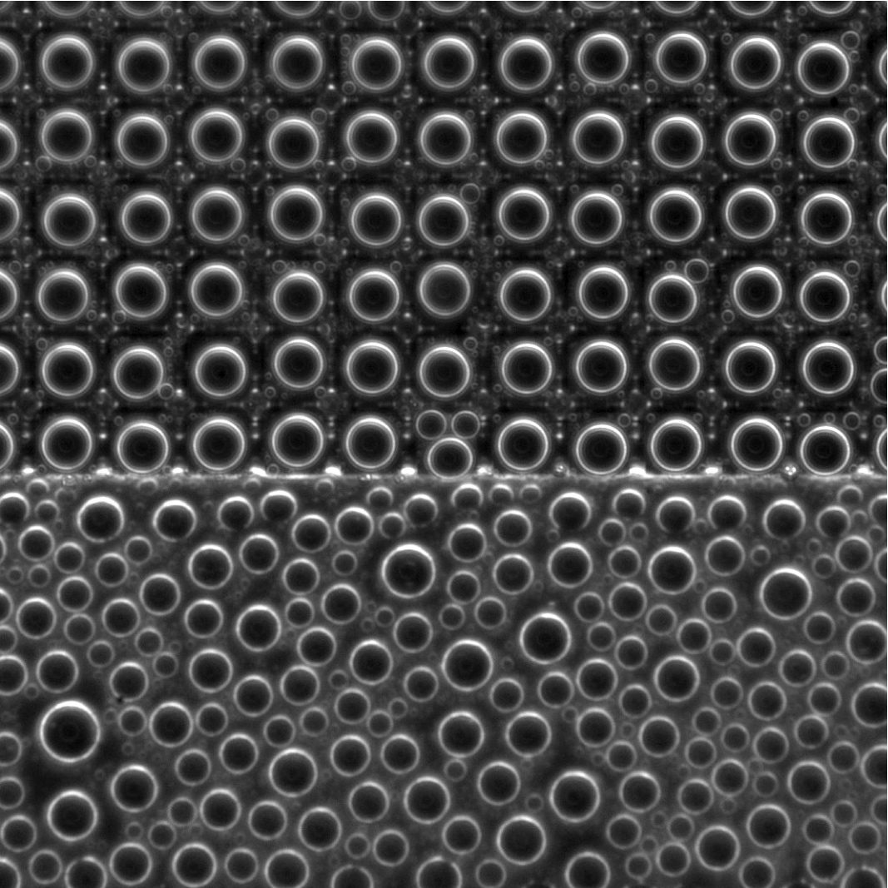

Figure: Fog accumulation on substrate
Water drops on a substrate with both textured (top-half) and smooth (bottom-half) regions. We use dark-field illumination so that surfaces parallel with the image plane (like the substrate) are dark but inclined surfaces (like the edges of drops) are bright. Drops on the top half grow in an organized fashion due to the texture (square array of square pillars).